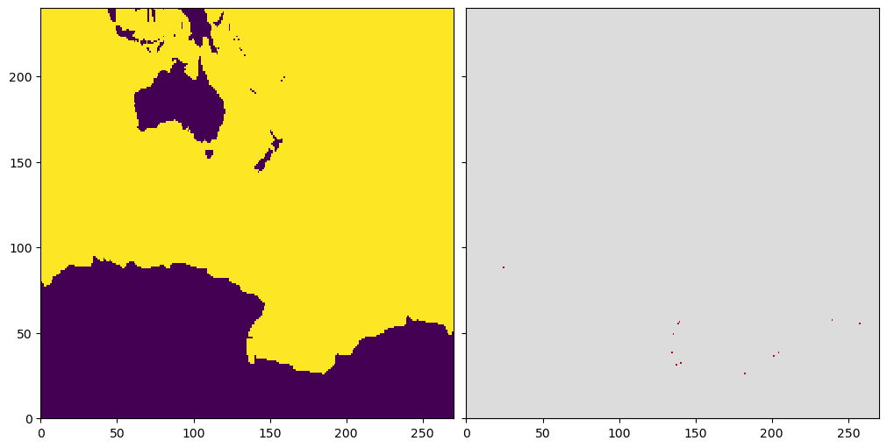
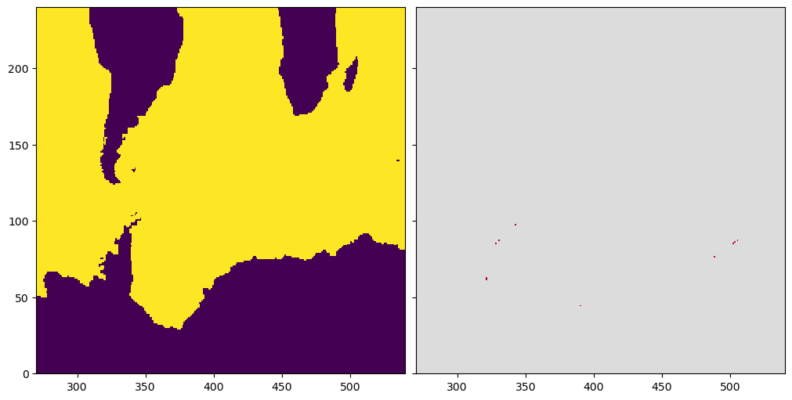
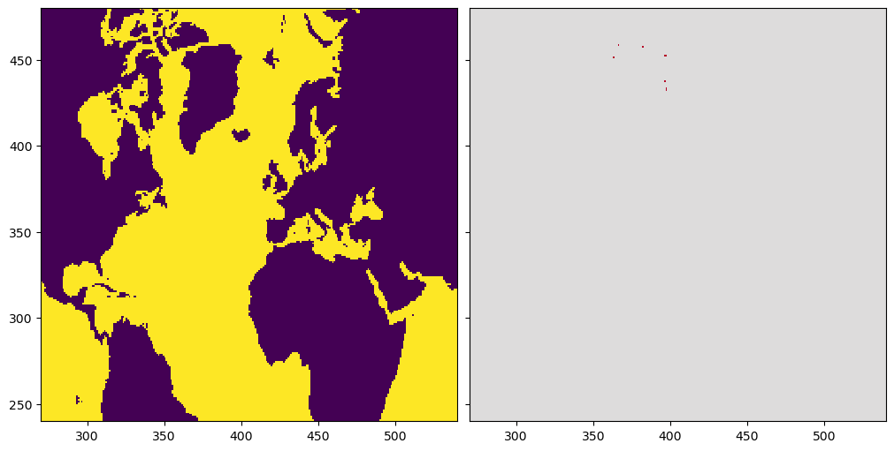
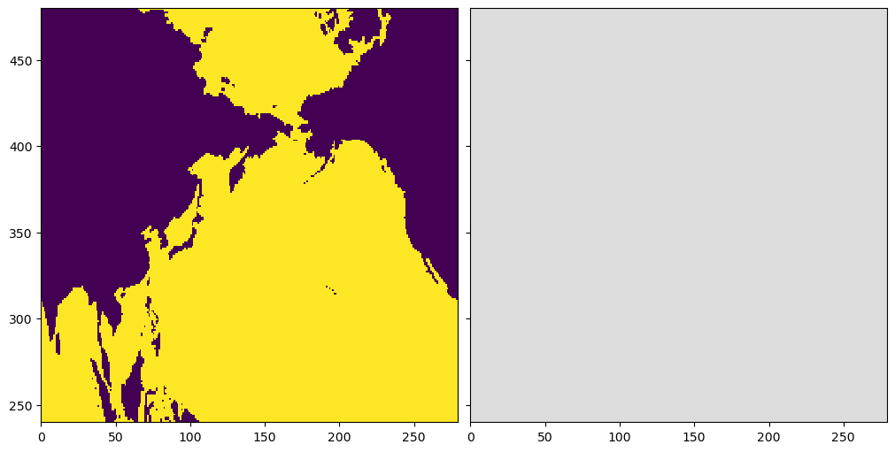
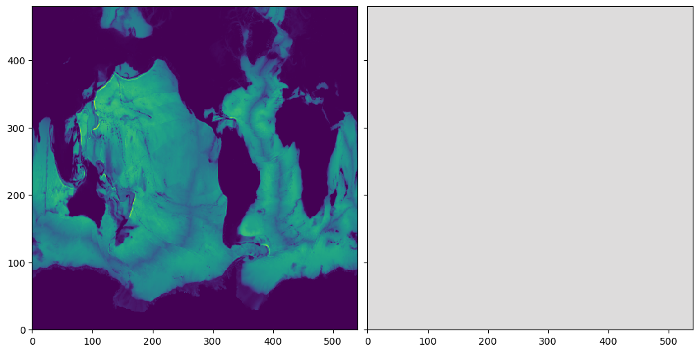

import os
import sys
sys.path.insert(0,os.path.abspath('../src/'))
%load_ext autoreload
%autoreload 2
%matplotlib inline
import numpy as np
import xarray as xr
import matplotlib.pyplot as plt
from topo_edit_util import map_mask, mom6_latlon2ij
The autoreload extension is already loaded. To reload it, use:
%reload_ext autoreload
path_old = '/glade/work/bryan/MOM6-data-files/Topography/tx2_3v2/'
file_old = 'topo.sub150.tx2_3v2.srtm.edit4.SmL1.0_C1.0.nc'
df_old = xr.open_dataset(path_old+file_old)
df_old
<xarray.Dataset> Size: 20MB
Dimensions: (lath: 480, lonh: 540, latq: 481, lonq: 541)
Coordinates:
* lath (lath) float64 4kB -81.56 -81.46 -81.36 ... 89.33 89.6 89.86
* lonh (lonh) float64 4kB -286.7 -286.0 -285.3 ... 71.33 72.0 72.67
* latq (latq) float64 4kB -81.61 -81.51 -81.41 ... 89.46 89.72 89.91
* lonq (lonq) float64 4kB -287.0 -286.3 -285.7 ... 71.67 72.33 73.0
Data variables: (12/15)
geolon (lath, lonh) float64 2MB ...
geolat (lath, lonh) float64 2MB ...
geolonb (latq, lonq) float64 2MB ...
geolatb (latq, lonq) float64 2MB ...
z (lath, lonh) float32 1MB ...
ocn_frac (lath, lonh) float32 1MB ...
... ...
D2_mean (lath, lonh) float32 1MB ...
D_min (lath, lonh) float32 1MB ...
D_max (lath, lonh) float32 1MB ...
hand_edits (lath, lonh) int32 1MB ...
orig_mask (lath, lonh) int32 1MB ...
D_interp (lath, lonh) float32 1MB ...
Attributes:
Description: Ocean Topography Statistics on MOM6 Grid
Creator: Frank Bryan
Created: 20221228
Generating Code: create_model_topo.f90
Model Grid Version: tx2_3v2
Source Topography Data: /glade/work/bryan/Observations/Topography/SRTM/S...
Edit History: Hand Edit + Lake Fill 04/04/2023df_old['mask'].plot()
<matplotlib.collections.QuadMesh at 0x150e0897f4d0>

path_new = '/glade/work/bryan/MOM6-data-files/Topography/tx2_3v3_Feb2026/'
file_new = 'topo.sub150.tx2_3v3.SRTM15_V2.4.edit1.SmL1.0_C1.0.nc'
df_new = xr.open_dataset(path_new+file_new)
df_new
<xarray.Dataset> Size: 20MB
Dimensions: (lath: 480, lonh: 540, latq: 481, lonq: 541)
Coordinates:
* lath (lath) float64 4kB -81.56 -81.46 -81.36 ... 89.33 89.6 89.86
* lonh (lonh) float64 4kB -286.7 -286.0 -285.3 ... 71.33 72.0 72.67
* latq (latq) float64 4kB -81.61 -81.51 -81.41 ... 89.46 89.72 89.91
* lonq (lonq) float64 4kB -287.0 -286.3 -285.7 ... 71.67 72.33 73.0
Data variables: (12/15)
geolon (lath, lonh) float64 2MB ...
geolat (lath, lonh) float64 2MB ...
geolonb (latq, lonq) float64 2MB ...
geolatb (latq, lonq) float64 2MB ...
z (lath, lonh) float32 1MB ...
ocn_frac (lath, lonh) float32 1MB ...
... ...
D2_mean (lath, lonh) float32 1MB ...
D_min (lath, lonh) float32 1MB ...
D_max (lath, lonh) float32 1MB ...
hand_edits (lath, lonh) int32 1MB ...
orig_mask (lath, lonh) int32 1MB ...
D_interp (lath, lonh) float32 1MB ...
Attributes:
Description: Ocean Topography Statistics on MOM6 Grid
Creator: Frank Bryan
Created: 20260226
Generating Code: create_model_topo.f90
Model Grid Version: tx2_3v3
Source Topography Data: /glade/work/bryan/Observations/Topography/SRTM/S...
Edit History: Hand Edit + Lake Fill 02/27/2026df_new['mask'].plot()
<matplotlib.collections.QuadMesh at 0x150e089d0cd0>

np.max(np.abs((df_old['geolat'].values - df_new['geolat'].values)))
np.float64(0.0)
np.max(np.abs((df_old['geolon'].values - df_new['geolon'].values)))
np.float64(0.0)
diff = df_old['mask'] - df_new['mask']
x = diff.where(diff != 0,drop=True).stack(grid=('lath','lonh'))
print('# of mask values changed = ',x.count().values,' min change=',x.min().values,' max change=',x.max().values)
# of mask values changed = 30 min change= 1.0 max change= 1.0
diff = df_old['D_interp'] - df_new['D_interp']
x = diff.where(np.abs(diff) > 0.01,drop=True).stack(grid=('lath','lonh'))
print('# of depths changed by > 1 cm = ',x.count().values,' min change=',x.min().values,' max change=',x.max().values)
# of depths changed by > 1 cm = 30 min change= 10.16926097869873 max change= 888.458740234375
fig,ax=plt.subplots(ncols=2,sharex=True,sharey=True,figsize=(10,5),constrained_layout=True)
ax[0].pcolormesh(df_new['mask'],cmap='viridis',vmin=0,vmax=1)
ax[0].set_xlim(0,270)
ax[0].set_ylim(0,240)
ax[1].pcolormesh((df_old['mask'] - df_new['mask']),vmin=-1,vmax=1,cmap='coolwarm')
<matplotlib.collections.QuadMesh at 0x150e088cd810>

fig,ax=plt.subplots(ncols=2,sharex=True,sharey=True,figsize=(10,5),constrained_layout=True)
ax[0].pcolormesh(df_new['mask'],cmap='viridis',vmin=0,vmax=1)
ax[0].set_xlim(0,270)
ax[0].set_ylim(240,480)
ax[1].pcolormesh((df_old['mask'] - df_new['mask']),vmin=-1,vmax=1,cmap='coolwarm')
<matplotlib.collections.QuadMesh at 0x150e08786490>

fig,ax=plt.subplots(ncols=2,sharex=True,sharey=True,figsize=(10,5),constrained_layout=True)
ax[0].pcolormesh(df_new['mask'],cmap='viridis',vmin=0,vmax=1)
ax[0].set_xlim(270,540)
ax[0].set_ylim(0,240)
ax[1].pcolormesh((df_old['mask'] - df_new['mask']),vmin=-1,vmax=1,cmap='coolwarm')
<matplotlib.collections.QuadMesh at 0x150e0866c050>

fig,ax=plt.subplots(ncols=2,sharex=True,sharey=True,figsize=(10,5),constrained_layout=True)
ax[0].pcolormesh(df_new['mask'],cmap='viridis',vmin=0,vmax=1)
ax[0].set_xlim(270,540)
ax[0].set_ylim(240,480)
ax[1].pcolormesh((df_old['mask'] - df_new['mask']),vmin=-1,vmax=1,cmap='coolwarm')
<matplotlib.collections.QuadMesh at 0x150e08528cd0>

fig,ax=plt.subplots(ncols=2,sharex=True,sharey=True,figsize=(10,5),constrained_layout=True)
ax[0].pcolormesh(df_new['mask'],cmap='viridis',vmin=0,vmax=1)
ax[0].set_xlim(0,279)
ax[0].set_ylim(240,480)
ax[1].pcolormesh((df_old['mask'] - df_new['mask']),vmin=-1,vmax=1,cmap='coolwarm')
<matplotlib.collections.QuadMesh at 0x150e085de850>

fig,ax=plt.subplots(ncols=2,sharex=True,sharey=True,figsize=(10,5),constrained_layout=True)
ax[0].pcolormesh(df_old['D_mean'],cmap='viridis')
ax[1].pcolormesh((df_old['D_mean'] - df_new['D_mean']),cmap='coolwarm',vmin=-1,vmax=1)
print(np.max(np.abs((df_old['D_mean'] - df_new['D_mean']).values)))
0.0

fig,ax=plt.subplots(ncols=2,sharex=True,sharey=True,figsize=(10,5),constrained_layout=True)
ax[0].pcolormesh(df_old['D_interp'],cmap='viridis')
ax[1].pcolormesh((df_old['D_interp'] - df_new['D_interp']),cmap='coolwarm',vmin=-1,vmax=1)
print(np.max(np.abs((df_old['D_interp'] - df_new['D_interp']).values)))
888.45874